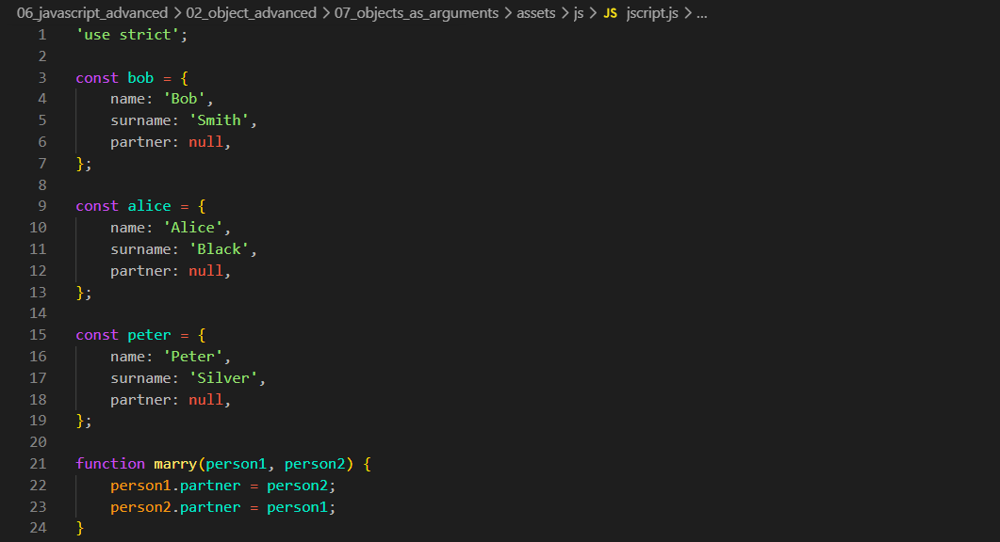
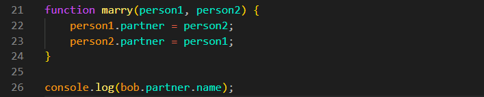
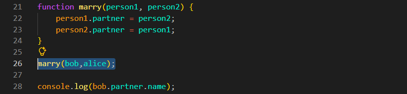
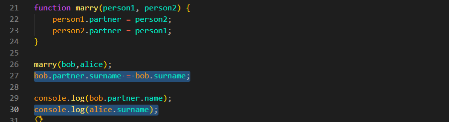
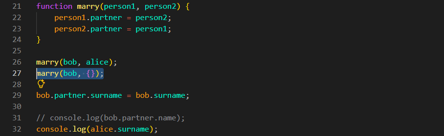
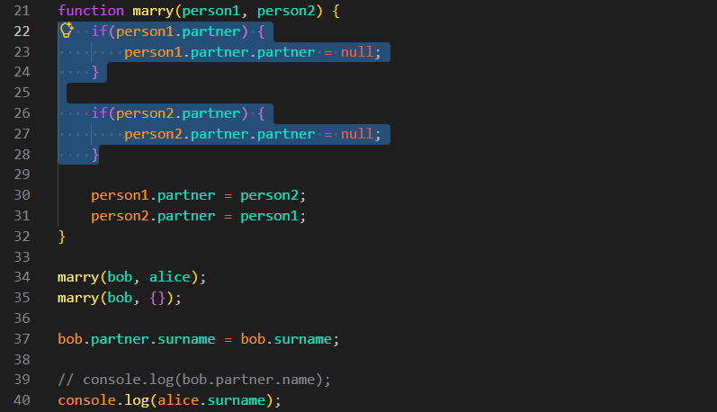

Objects as Arguments
Intro
Agora iremos entender melhor como trabalhar com objetos ao passa-los como parametros dentro de uma funcao.
Agora iremos entender melhor como trabalhar com objetos ao passa-los como parametros dentro de uma funcao.
JS:

Podemos observar que, em nosso código, foram criados 3 objetos. Após isso, criamos uma função com 2 parâmetros. Nessa função, estamos basicamente criando um par entre esses objetos.
Em nossa função, pegamos o primeiro objeto pela propriedade .partner e fazemos com que ela receba o segundo objeto. Em seguida, fazemos o mesmo com o segundo objeto, fazendo sua propriedade .partner receber o primeiro objeto. Com isso, ambos passam a armazenar uma referência um ao outro e se tornam parceiros.
Podemos verificar isso utilizando o console.log da seguinte forma:

Se fizermos dessa forma, teremos um erro em nosso código. Isso acontece porque estamos acessando a propriedade partner.name, porém, inicialmente, partner possui o valor null. Para resolver isso, primeiro precisamos chamar a função e passar os objetos como parâmetros, da seguinte forma:

Podemos ir além. Além de tornar os objetos parceiros, também podemos fazer com que 'Alice' adote o sobrenome de Bob. Para isso, podemos fazer da seguinte forma:

Com isso, agora podemos observar que, em nosso console.log, 'Alice' terá o sobrenome Smith em vez de Black.
Explicação:
1) Criamos uma função com dois parâmetros e passamos dois objetos como argumentos. Esses objetos são recebidos pela função por meio de referências.
2) Dentro da função, alteramos as propriedades desses objetos, criando a relação entre eles.
3) Fora da função, basta chamá-la e passar os objetos como parâmetros para que essas alterações sejam aplicadas.
4) Como Bob possui um parceiro em .partner, podemos alterar o sobrenome desse parceiro utilizando bob.partner.surname = bob.surname;.
O que ocorreria se passássemos outro parceiro para Bob utilizando um objeto vazio?

Ao fazermos isso, Alice voltará a possuir o sobrenome 'Black'.
Isso ocorre porque, no momento em que executamos bob.partner = {}, o parceiro de Bob passa a ser o objeto vazio ({}) e deixa de ser 'Alice'. Assim, quando alteramos bob.partner.surname, a alteração é feita no novo objeto, e não mais em Alice.
Porém, se utilizarmos console.log(alice.partner);, veremos que 'Alice' ainda continua vinculada a 'Bob'. Isso acontece porque nossa função ainda não está completamente correta. Antes de criar uma nova parceria, devemos remover a referência dos parceiros anteriores.
Para isso, podemos adicionar uma condicional em nossa função:

Quando trabalhamos com objetos, é importante lembrar que as variáveis não armazenam o objeto em si, mas sim uma referência para ele. Isso significa que person1 e person2 são apenas referências para os objetos que foram passados. Por esse motivo, ao alterar um objeto por meio de uma dessas referências, todas as outras referências para esse mesmo objeto também enxergarão essa alteração.
Voltar